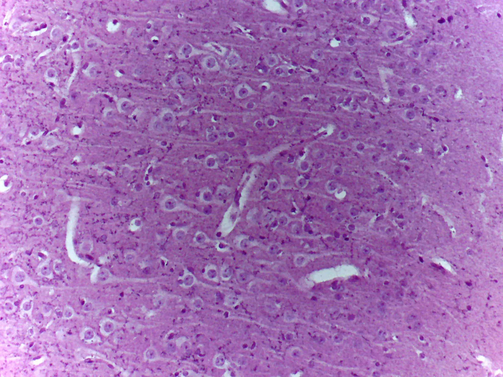
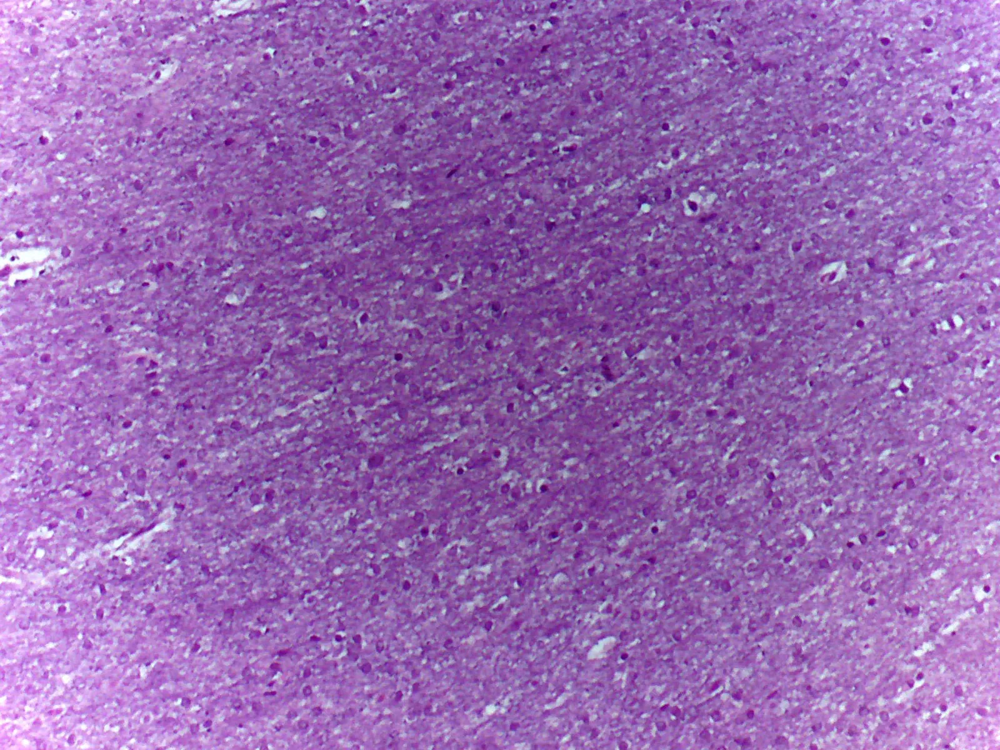
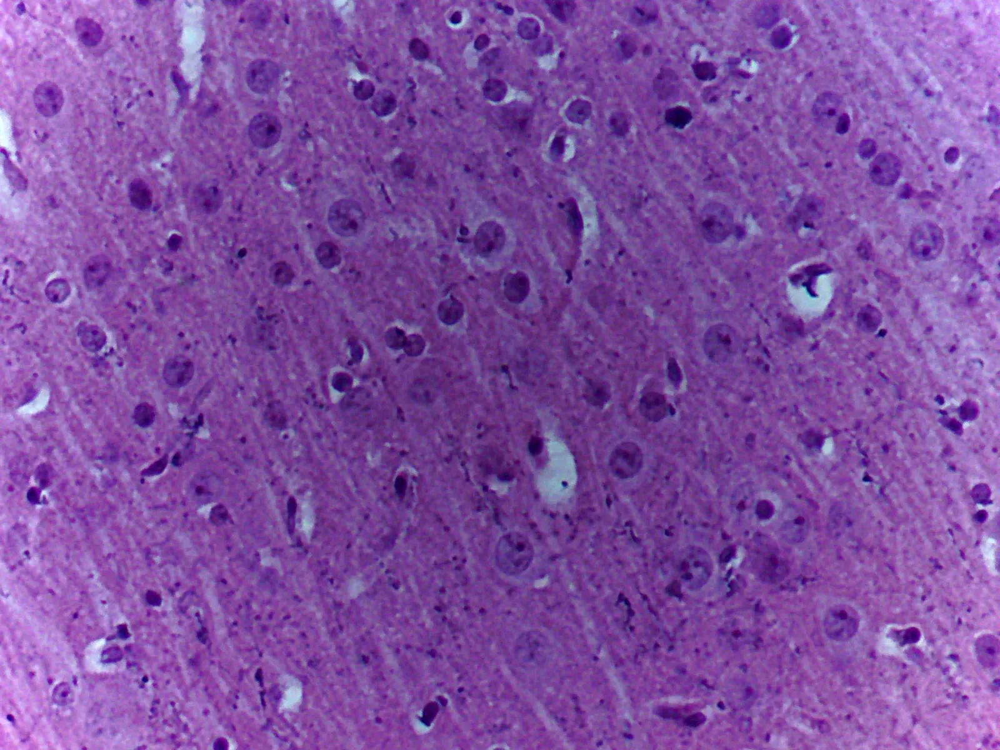
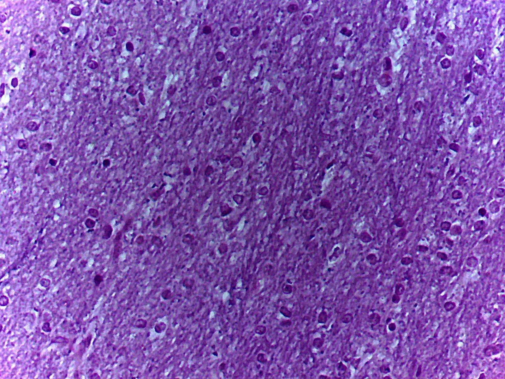

Lâmina 61 · Tecido nervoso
Cérebro




Toque na imagem para ampliar. No computador, use as setas do teclado para trocar de imagem.
Lâmina 61 · Tecido nervoso




Toque na imagem para ampliar. No computador, use as setas do teclado para trocar de imagem.